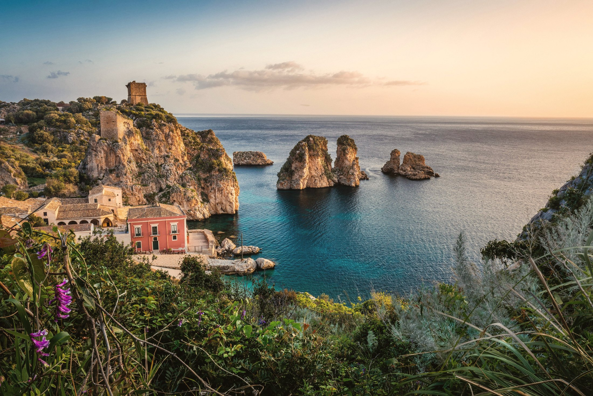
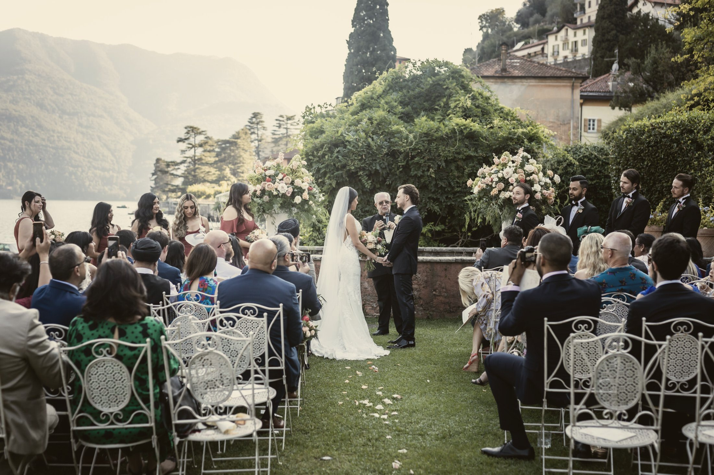
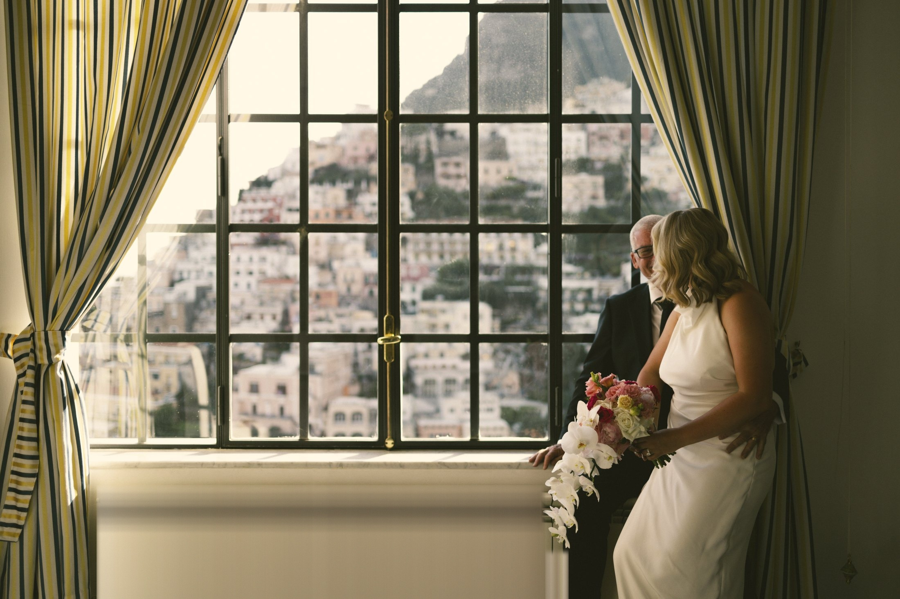
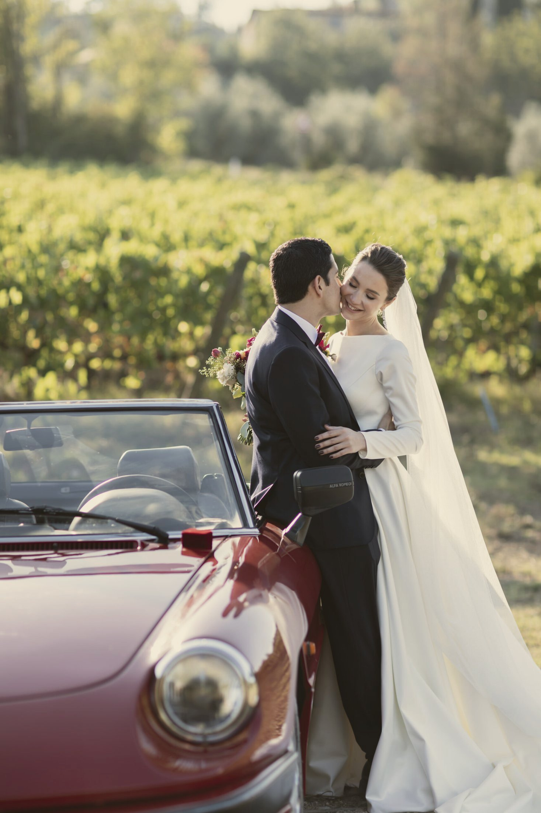
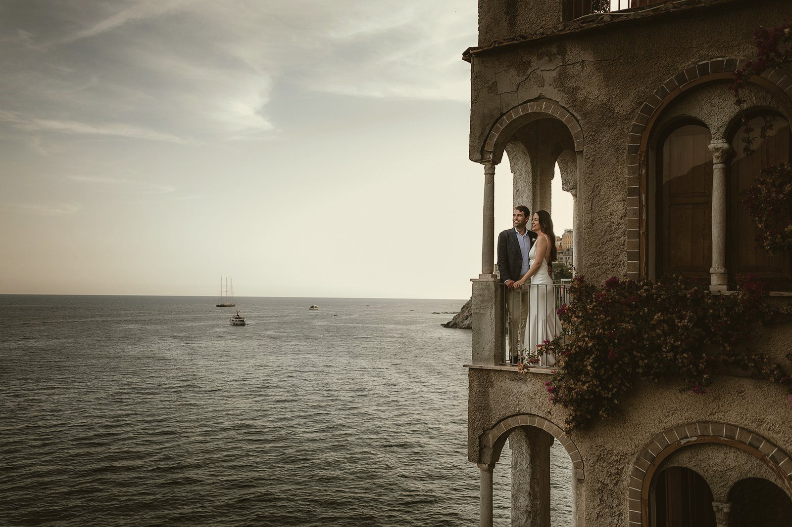
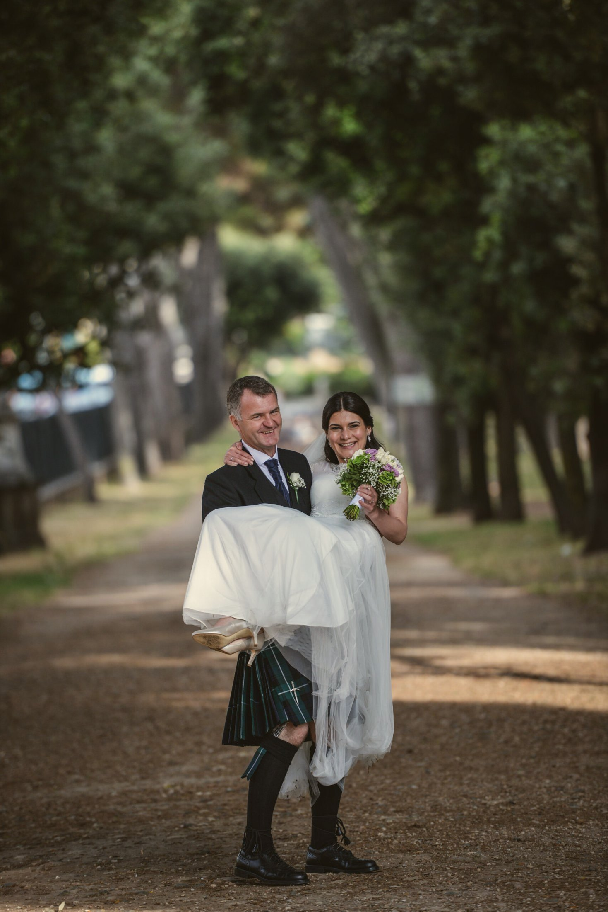
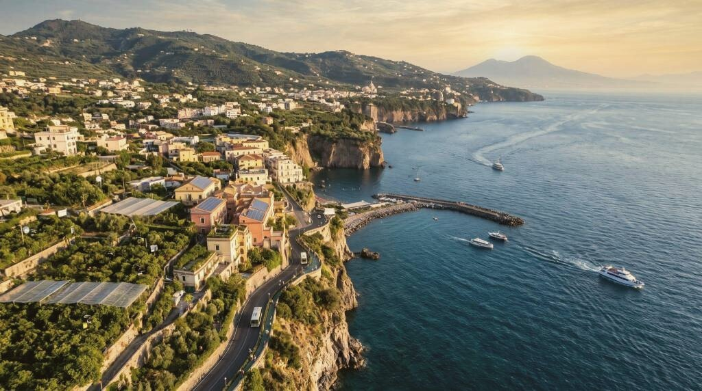
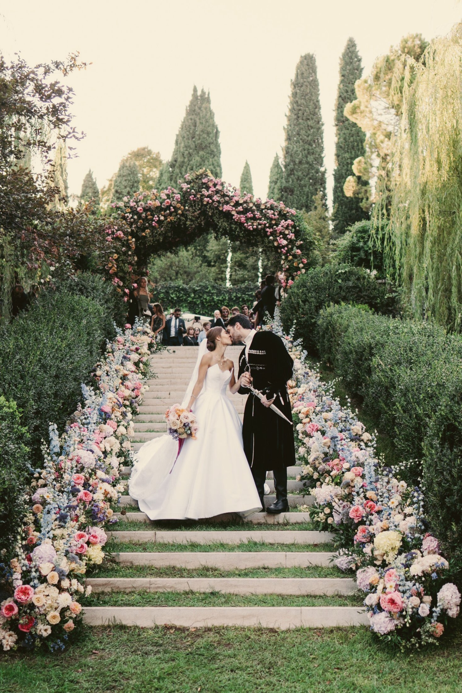
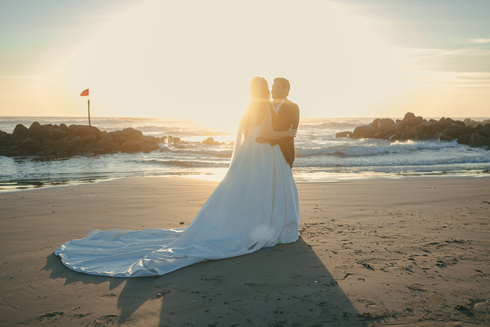
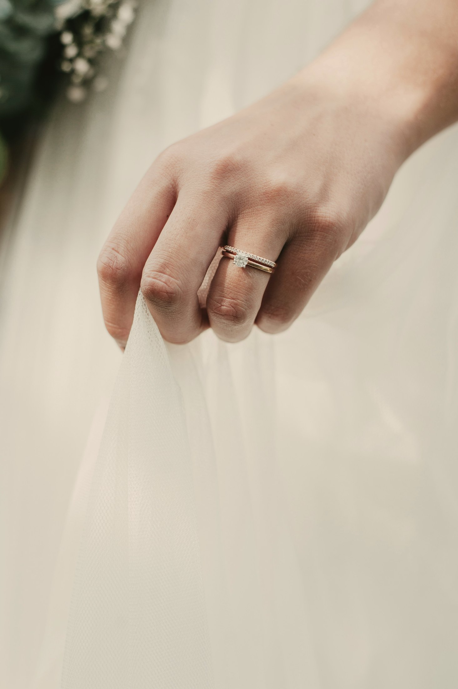

Eight places we know by heart, from the still water of Lake Como to the coves of Sardinia.
Planning a wedding abroad can be daunting…
— Amy & Gareth


Ilaria and her team created the most wonderful wedding celebration for us.
— Blathnaid & James

We had an amazing wedding in beautiful Tuscany in Castello il Palagio.
— Juliia & John


…we could not have managed to arrange our wedding without their help.
— Iain



They really helped us to finalize the whole three-day weekend from A to Z.
— Catheline & Simone
